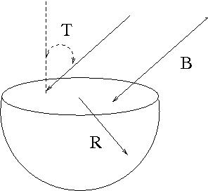

Consider the hemispherical closed surface of radius R as shown in the figure.

The hemisphere is inside a uniform magnetic field \mathbf{B} that
makes an angle of T with the vertical as shown.
Recall that magnetic flux through a surface of area \mathbf{A} is given
by the integral \displaystyle \Phi = \int \mathbf{B} \cdot d\mathbf{A} .
Calculate the outward magnetic flux through the flat part of the surface
\Phi = - \pi B R^2 \cos (T)
\Phi = 2 \pi R B \cos (T) \Phi = \pi B R^2 \sin (T) \Phi = \pi B R^2 \Phi = \pi B R^2 \cos(T) The area element d\mathbf{A} is directed perpendicularly outward from the surface.
The inner or "dot" product between the magnetic field \mathbf{B} and the
area element d\mathbf{A} is
\displaystyle B dA \cos \left( \pi - T \right) .
Now use the trigonometric identity \displaystyle \cos \left( \pi - T \right) = - \cos (T)
to get the integral \displaystyle \Phi = - \int B \cos \left( T \right) dA over the top surface
The integral evaluates to \displaystyle \Phi = - B A \cos \left( T \right)
and since the top surface is a circle of radius R we have
\displaystyle \Phi = - B \pi R^2 \cos \left( T \right) .